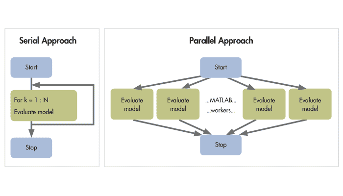

2025-04-06
Section III: Foundations for Modern Language Modeling
Focus:
Chapter 15: Pretraining Recipes
Goal: Understand the choices in pretraining LLMs
Builds on: Transformers, Tokenization, Positional encoding
Chapter 16: Distributed Training and FSDP
Primary Objective: Understand key concepts for training modern LLMs
The Scale Challenge: - Modern LLMs: 7B to 1T+ parameters - Single GPU memory (A100): Only 40-80GB - 7B model memory requirements: - Weights: ~14GB (FP16) - Gradients: ~14GB - Optimizer states: ~28GB (Adam) - Activations: Variable with batch size
Solution: Split computation across multiple devices
Four primary approaches:
Improving Optimization Performance with Parallelism Computing
Core Concept: Shard model parameters, gradients, and optimizer states
How it works: - Each device stores only a portion of the full model - During forward/backward pass: - Gather needed parameters (all-gather) - Compute with gathered parameters - Re-shard parameters after use
Benefits: - ~N-fold memory reduction with N devices - Enables training much larger models - Preserves computation efficiency of data parallelism
Combine these techniques for maximum efficiency:
Basic implementation:
# Initialize distributed process group
torch.distributed.init_process_group("nccl")
# Wrap model with FSDP
model = FSDP(
model,
sharding_strategy=ShardingStrategy.FULL_SHARD,
mixed_precision=mp_policy,
device_id=torch.cuda.current_device()
)
# Train normally
for batch in dataloader:
loss = model(batch).loss
loss.backward()
optimizer.step()Hardware Topology: - Intra-node: High-speed GPU connections (NVLink) - Inter-node: Network connections (InfiniBand)
Communication Bottlenecks: - All-gather: Collect sharded parameters - Reduce-scatter: Aggregate gradients - Communication volume grows with model size
Optimization Strategies: - Match parallelism strategy to hardware topology - Hierarchical communication patterns - Overlap computation with communication
Combining complementary strategies:
Example (175B model training): - 8-way tensor parallelism - 12-way pipeline parallelism - 32-way data parallelism - Total: 3,072 GPUs
Used by major labs for largest models
Popular Frameworks:
- PyTorch FSDP: Native PyTorch implementation
- DeepSpeed: Microsoft’s ZeRO implementation
- Megatron-LM: NVIDIA’s specialized framework
- JAX/Flax: Google’s functional approach
Learning Resources:
Distributed training essential for modern LLMs
FSDP provides memory-efficient data parallelism
Combine multiple parallelism strategies for best results
Memory optimizations as important as compute scaling
Hardware topology should inform parallelism strategy
LLM training represents extreme engineering challenge